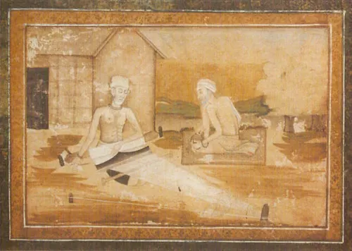

Kabir and Raidas
Details
SUBJECT MATTER: This is a horizontal painting by Ustad Faquiirullah which was painted back in the era of Dara Shikon, who was the son of Shah Jahan. Dara Shikon was secular and loved all religions equally, that's why poeple also loved him. This illustration by Ustad is showing Kabir and Raidas, who were two prominent saints during that time period. Even being a muslim ruler, Dara Shikon has shown the hindu saints in the painting. Looking at the whole composition, the painting is a masterpiece of that time period.
DESCRIPTION: This horizontal masterpiece shows, two saints during their daily life. In meditating mood, Kabir is shown weaving some garment on his loom. Nearby, Raidas is also shown sitting near Kabir, also in meditating mood. One can notice the simple and peaceful Indian life which was brought to life by this painting. The life in village was always peaceful and work was worshipped. The painting is drawn very realistic. The dull and bright colors are used in painting for shading, to highlight the ribs on the thin and lean torso of Kabir and Raidas. A spiritual aura is created from the misty background painted. The hut of the saints are in Indian rural style. Blue and brown are the colors used. Light brown and the shades are very fine for the borders of this masterpiece illustration.
Dara Shikon, son of Shah Jahan respected both muslims and hindus and did not descriminate in the religions. Unlike other Mughal Art where Mughal art was glorified with colors and style, this masterpiece under the eulw of Dara Shikon was made with simple and subdued colors.
HUMAN VALUES:
1.High thinking even after living a simple life.
2.Humility of a person.
3.Not any superficial lifestyle, just enough comfort.
4.Two religious leaders share their opinion without any display of supremacy or competition.
5.Dignity of a worker or labour, no work in this world is small or big.
6.Oneness of divine though ways to reach him may differ in some ways.